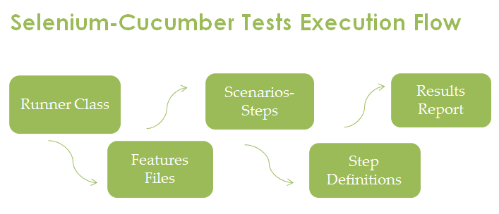
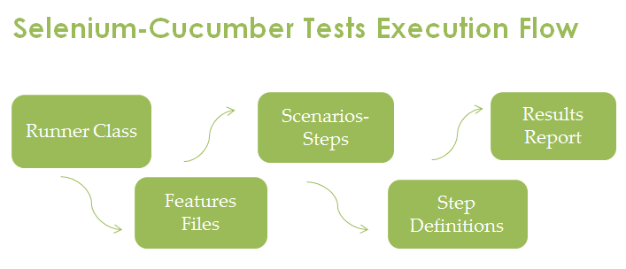
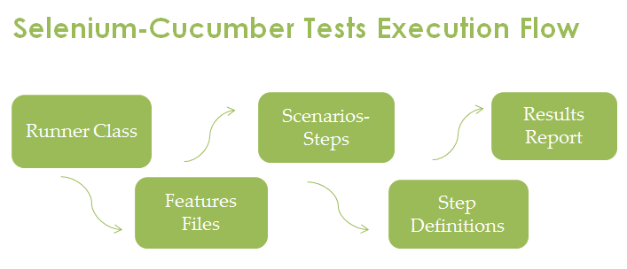
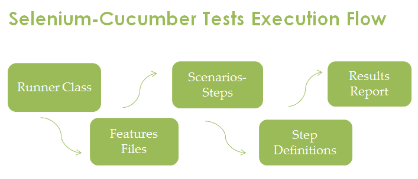
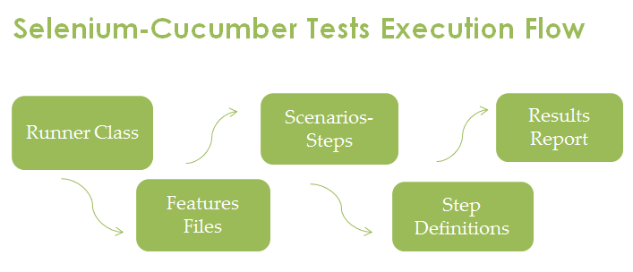

Part Of HTML
Home
-
Step By Step TestNG Set Up

Cucumber - Selenium
click below table links for details...
Cucumber Prerequisite
1.Maven set up in IntelliJ
5.Cucumber First test scripts
9.Run Cucumber from Pom.Xml
2.Cucumber Feature file
6.Cucumber reporting
10.Run Cucumber from Jenkins
3.Cucumber Step Definition File
7.Parameterizations and Data table
4.Cucumber Test Runner File
8.Cucumber test run by TAG
11.Cucumber Hook
12.Cucumber + TestNG

 


